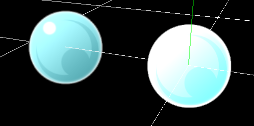
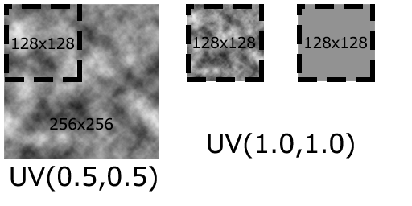

基础渲染设置¶
概述¶
本章讲解“基础渲染窗口”，它提供了用于控制当前粒子渲染的基础参数。
参数¶

“基础渲染设置”窗口
材质¶
设置用于绘制粒子的材质。 你可以设置光照对粒子的影响或者扭曲背景之类。
默认¶
粒子将直接显示贴图的颜色。
照明¶
粒子会受到光照的影响（出现明暗）。 除了用于提供颜色的贴图（可以称为漫反射贴图）外，还可以设置法线（Normal）贴图。 设置了法线贴图之后，表面的方向会被改变。
扭曲（背景）¶
如果启用了扭曲，粒子将会扭曲它后面的任何东西。扭曲的方式取决于扭曲贴图的像素数据和扭曲强度。
扭曲贴图的红色和绿色通道将被用作扭曲信息。它们的值为127时，不会产生扭曲效果。当红色通道的值超过127时，背景将向右扭曲，小于127时，背景将向左扭曲。绿色通道的值大于127时，背景将向上扭曲，小于127时，背景将向下扭曲。但是，这里的上下左右取决于渲染方法。例如，渲染方法为精灵时，上下左右方向垂直于图片的四个边。
扭曲强度调整所有颜色的强度。值为0时，扭曲不会生效。
扭曲 | 无扭曲 |
 |  |
在默认设置下，扭曲只会影响背景，而不会影响特效自身。要扭曲特效自身的其他节点，可在深度面板中设置绘制优先级。绘制优先级小于0的节点会因特效自身的扭曲而与背景一起扭曲。
发光系数¶
用设置的值乘粒子的颜色。值越高，颜色越亮。如果值为1，图片会保持原样。 仅当材质是基础或照明时有效。 在不支持HDR的环境，提高这个值会产生奇怪的颜色表现。
过滤¶
设置粒子显示时的过滤方式。
深度写入¶
设置粒子显示时是否会写入深度信息（用来表示粒子到摄像机的距离）。写入深度信息之后，渲染开启了深度测试的粒子时，如果这些开启了深度测试的粒子在写入了深度信息的粒子之后，它们就不会被渲染。
深度测试¶
如果启用了深度测试，比已经写入的深度信息更深的粒子不会被渲染。
淡入¶
粒子在生成时淡入。
淡出¶
粒子在将要销毁时淡出。
UV¶
设置粒子会显示出图像的哪个区域。 这个区域可以随时间变化，允许你让图片滚动或播放动画。 此处使用的单位是像素。


F-曲线¶
使用F-曲线。
引用（UV）¶
一个粒子可以使用多张不同尺寸的图片。 在这种情况下，你可以选择一张图片将其分辨率作为图像的基础比例。 你还可以以128x128为基础设置UV，而无需设置图片。
使用材质时，参考图像的编号与材质的图像的优先级一致。

继承颜色¶
设置父粒子的颜色是否会影响子粒子的颜色。如果设置了继承颜色，子粒子最终渲染的颜色是父粒子的颜色乘子粒子设置的的颜色。如果选择了“仅生成时”，则生成子粒子时会应用父粒子当前的颜色。
从不 | 仅生成时 | 始终 |
 |